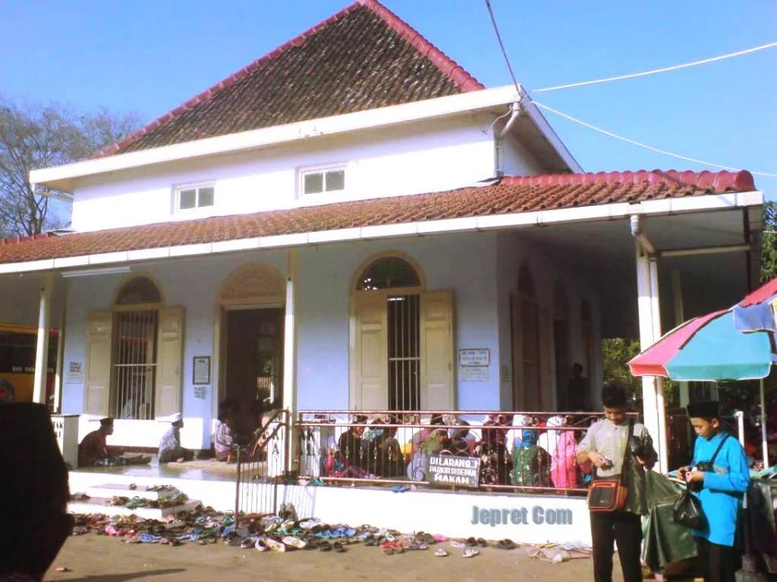

Destinasi Populer

Masjid Agung Pekalongan
Masjid bersejarah dengan arsitektur Islam yang megah
Pusat Kota
Buka 24 Jam

Makam Habib Ahmad
Situs ziarah yang ramai dikunjungi peziarah
Krapyak
08.00 - 17.00

Pesantren Al-Quran
Pusat pendidikan Islam tertua di Pekalongan
Kauman
09.00 - 16.00